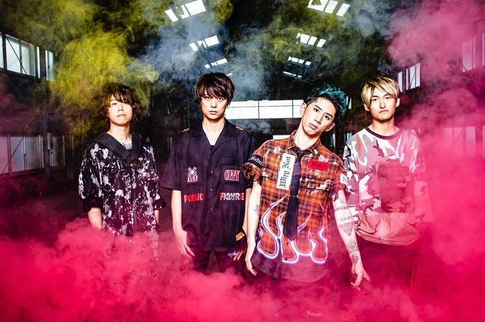
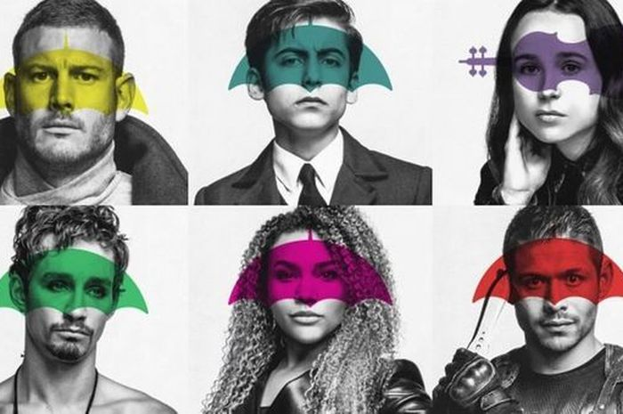

Selama 2 Bulan Penuh, ONE OK ROCK Bakal Tayangin 6 Arsip Live-nya di Youtube

ONE OK ROCK mengumumkan penayangan dari sejumlah arsip konser live-nya yang dilakukan
dalam beberapa tahun terahkir di channel Youtube Premieres.Selama dua bulan ke depan, yang
dimulai pada 17 April hingga 31 Mei, band rock asal Jepang itu akan menyiarkan enam buah
arsip rekaman dari konser live-nya, dengan jadwal penayangan pertama yaitu konser di
Yokohama Stadium pada 2014 lalu.
"Mengumumkan perilisan 6 konser penuh di seluruh dunia yang akan disiarkan
di (channel) YouTube Premieres selama 2 bulan ke depan," tulis ONE OK ROCK
dalam pengumuman di Twitter. "Video langsung tidak akan diarsipkan, jadi ini
adalah satu-satunya kesempatan untuk menangkap konser terakhir dari band," tambah
pernyataan tersebut di situs resmi ONE OK ROCK.
The Umbrella Academy Season 2 Bocorin Soundtrack Baru Yang Digarap Gerard Way

Musim pertama serial The Umbrella Academy memang telah cukup diwarnai dengan beragam
lagu dan soundtrack yang asik-asik. Salah satu yang cukup diingat adalah adegan di mana
ke lima karakter utama serial ini berdansa di ruang berbeda sambil diiringi lagu
klasik bernuans disko 'I Think We're Alone Now'. Belum lagi dengan soundtrack official
yang turut memperkuat mood ari kisah ini, yakni versi cover ciamik dari single The Bangles
'Hazy Shade Of Winter' oleh Gerard Way.
Kini, menyambut season 2 yang rilis pada 31 Juli nanti di Netflix,
The Umbrella Academy kayaknya masih bakal mempertahankan formula yang sama dengan
menyisipkan lagu-lagu asik. Sebab, dalam sosial medianya, The Umbrella Academy
tampak memberi bocoran dari sebuah lagu baru yang bakal ditampilin di season kedua.